Avantej — E2E Journey Review
Playwright (Chromium) · 66 journeys (66 passed · 0 failed · 0 skipped) · recorded against the running dev app · each card shows its journey steps + video
- Open Mission Control
- Primary nav shows Mission Control · Tenants · Billing
- System group reveals Health · Comms · Webhooks · Audit · Users
- Mission Control overview KPIs load (platformAdminDashboard.getOverview)
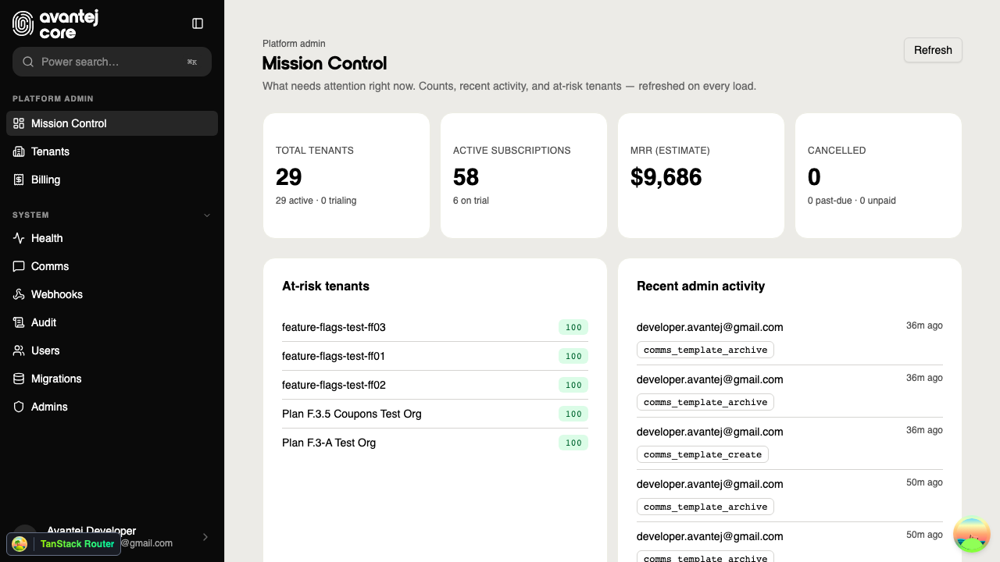
- Open the Tenants directory
- Directory renders the cross-tenant table (bulk-select control present)
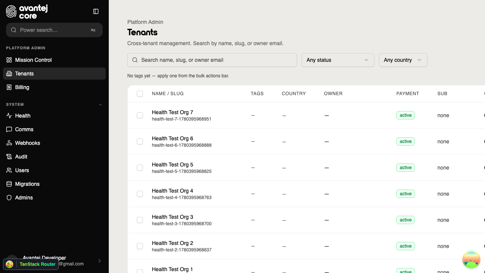
- Open the Tenants directory and click the first tenant
- Walk the tenant-detail tabs (tolerant — tab set varies by build)
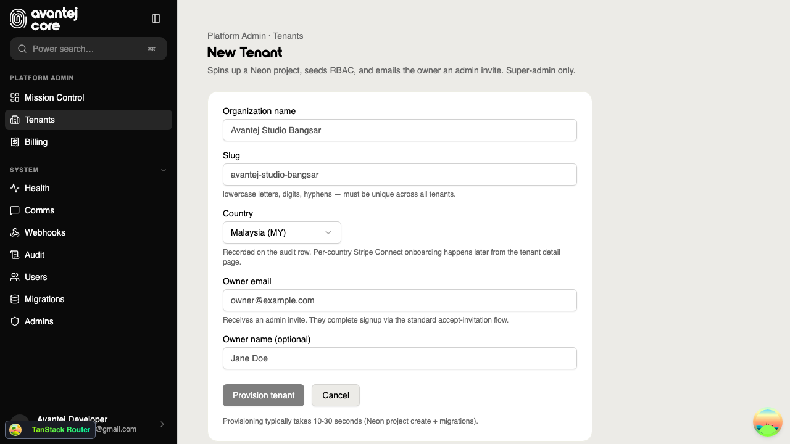
- Open Billing (global)
- Switch to the Revenue tab
- Renewals surface renders
- Payments surface renders
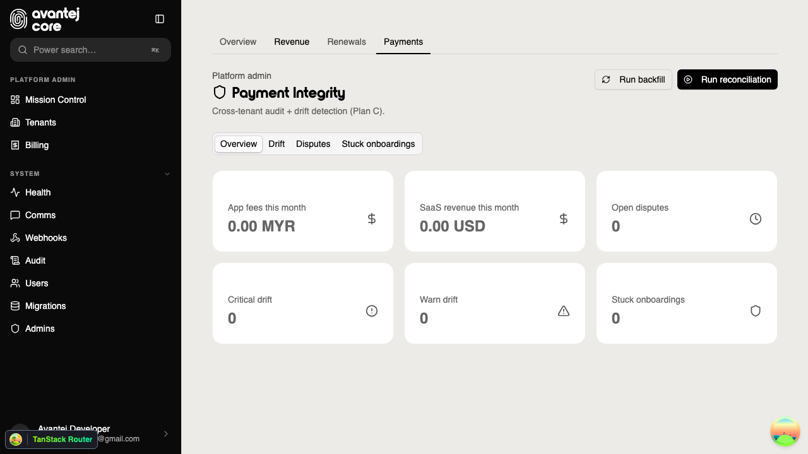
- Fetch the cross-tenant scoreboard via platformAdminHealth.getScoreboard
- Open the Health Scoreboard page
- Histogram, at-risk widget, risk-flag rollup, and sparkline all render
- Refresh re-fetches the scoreboard without error
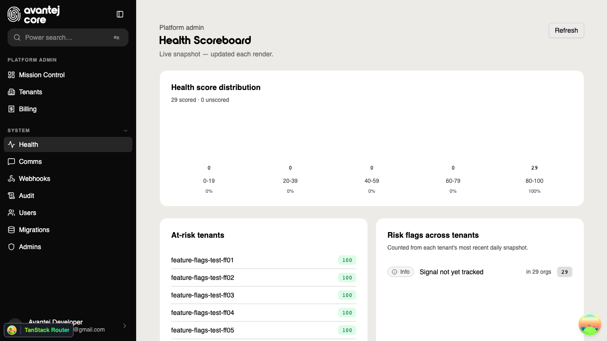
- Open Comms and read the outbox (listOutbox)
- Create a message template (createTemplate)
- Reload Comms, open the Templates tab — the new template is shown
- Archive the template (archiveTemplate) and confirm it leaves the active list
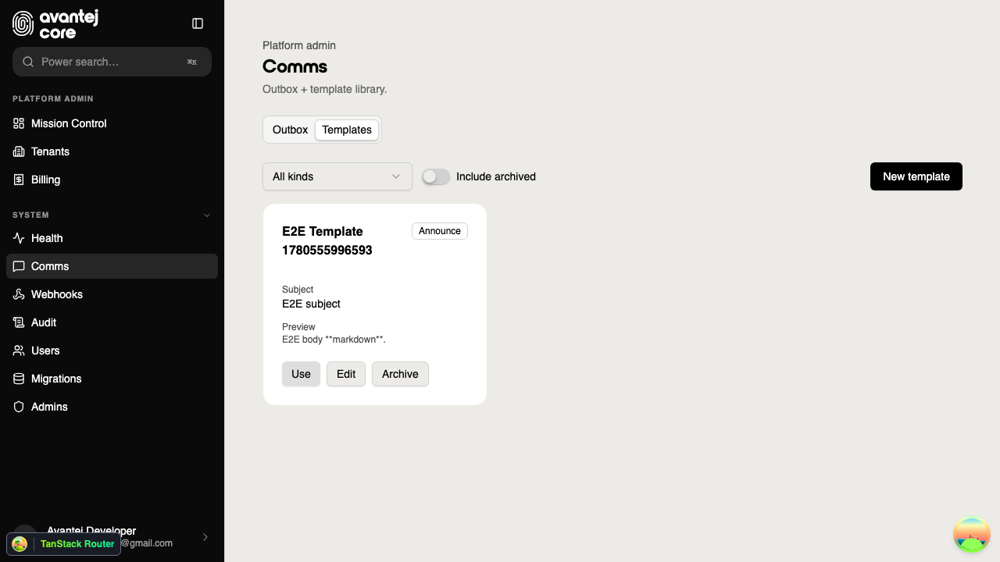
- Read the webhook overview (getOverview)
- Query the event log for the last 30 days (listEvents)
- Open the Webhooks log page — table renders
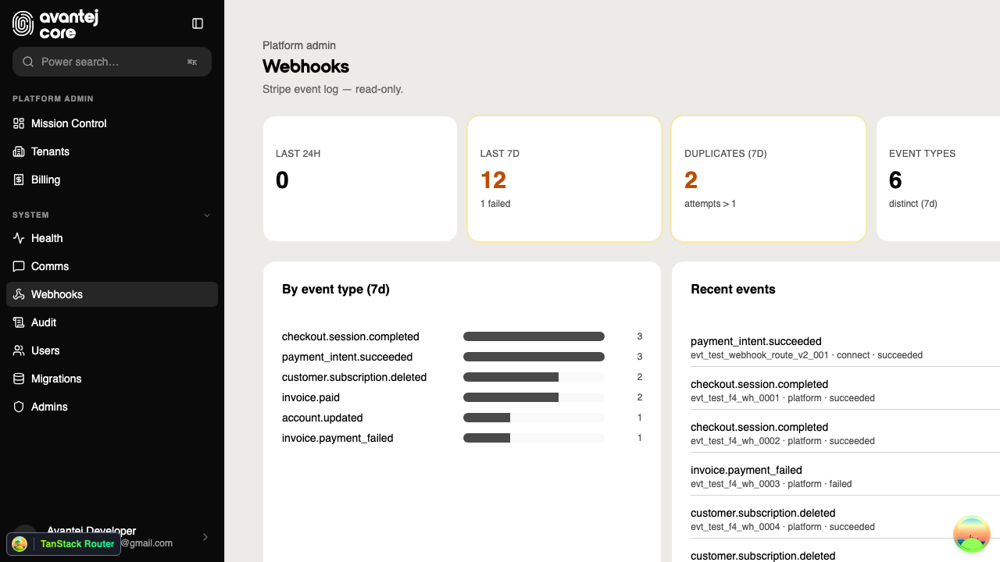
- List tenant migrations (listMigrations)
- Open a migration file (getMigrationFile) — SQL content returned
- Open the Migrations viewer page — renders
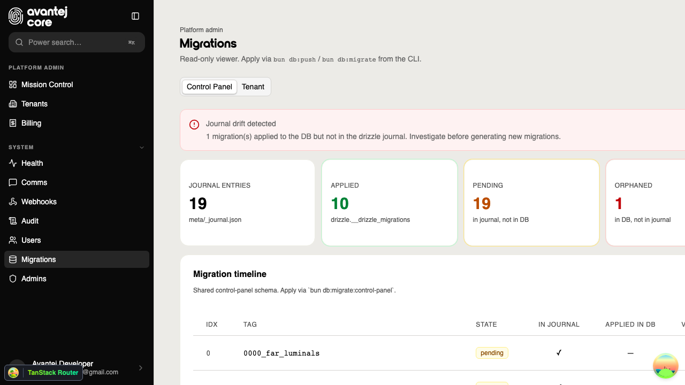
- List distinct action types (listActionTypes)
- Filter the admin action log by that action type (listAdminActions)
- Open the Audit log page — renders
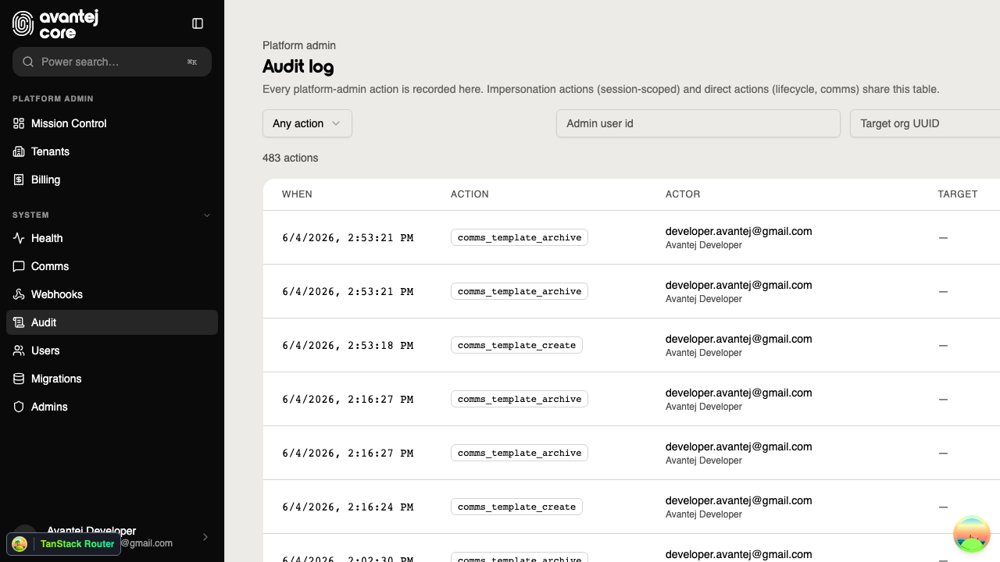
- Open the Users directory page — full roster loads
- Type 'gmail' into the search box — directory filters live
- Refine to 'developer' — results narrow to the matching user
- Inspect the Platform Admin column — role flags are shown
- Clear the search — the full directory returns
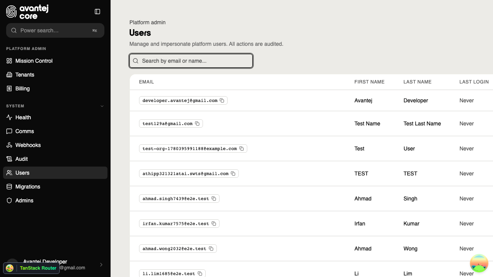
- Pick a non-admin user to promote
- Open the Admins surface — current roster loads
- Open 'Add Admin' and search the directory for the user
- Choose the Support role and grant access
- Revoke via the row action and confirm in the dialog
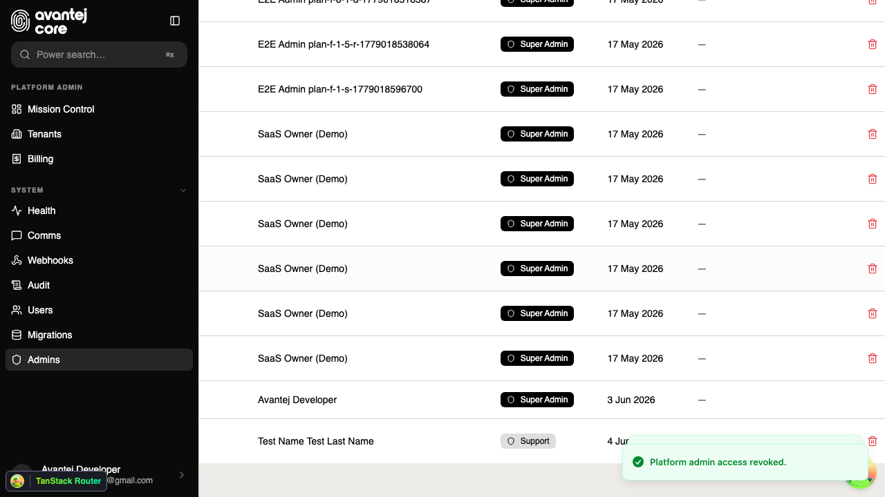
- Confirm caller identity (admin.me) and a clean impersonation status
- Pick an impersonatable (non-admin) tenant user
- Open Users, search the user, and click 'Login as'
- Confirm in the 'Impersonate user?' dialog
- Land in the impersonated session — the impersonation banner shows
- Stop impersonating — banner clears, identity restored to platform admin
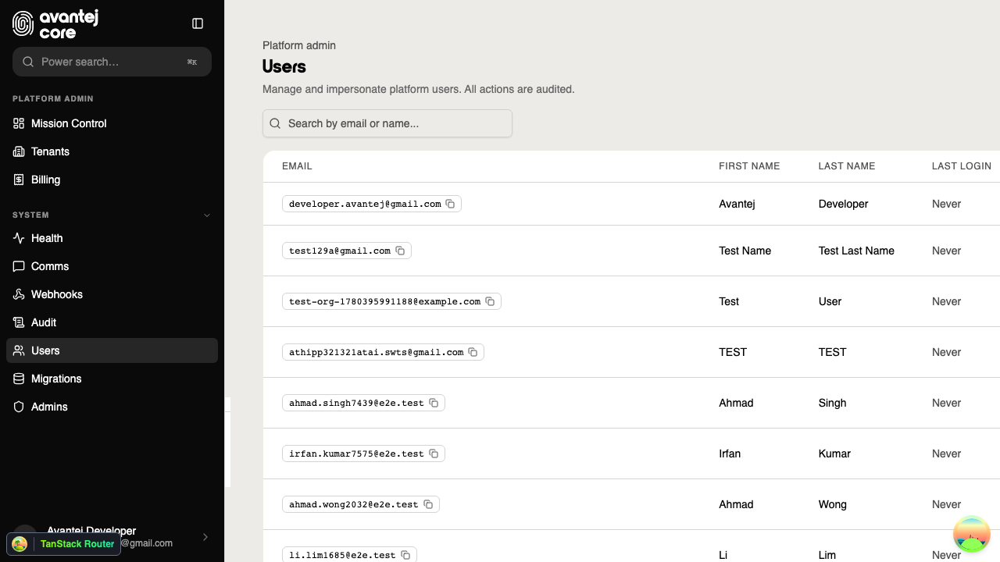
- Open the dashboard as the authenticated tenant admin
- Organization context is bootstrapped (current_organization_id present)
- Dashboard shell + key widgets are visible (no crash / no error boundary)
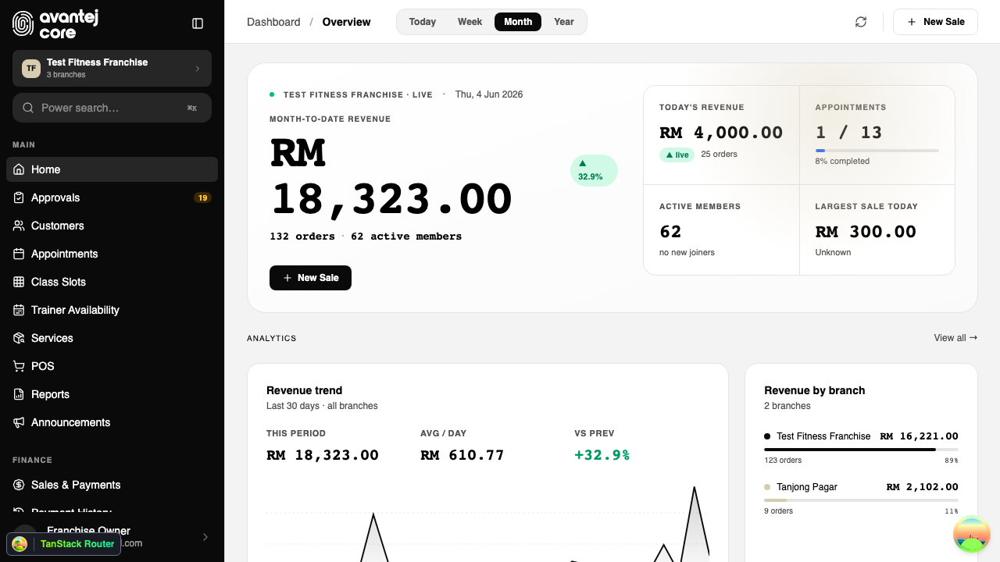
- Resolve tenant fixtures (client, product, branch)
- Record a cash POS sale of 1 product via the POS pipeline
- Open the Sales ledger — the new order is listed
- Verify the order via sales-orders.getById (status + total)
- Open the order detail page
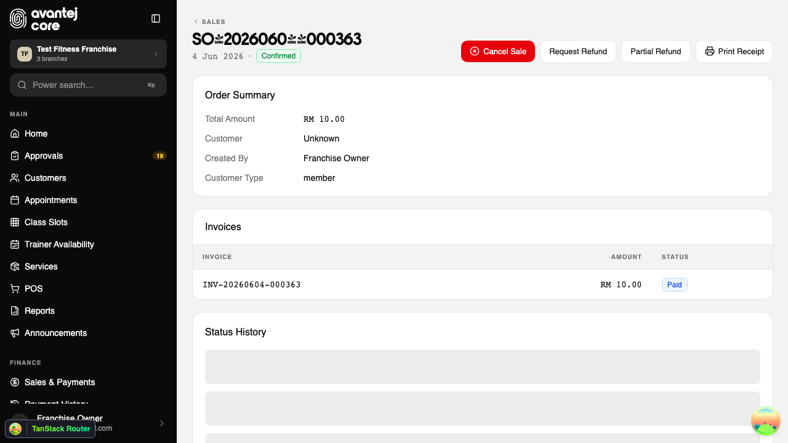
- Resolve fixtures (client, package-eligible service, branch)
- Record a POS sale of the package service (cash, member customer)
- A package instance exists for this client linked by salesOrderId
- Cross-check the link via the POS receipt DTO
- Open the order detail page — the new sale renders
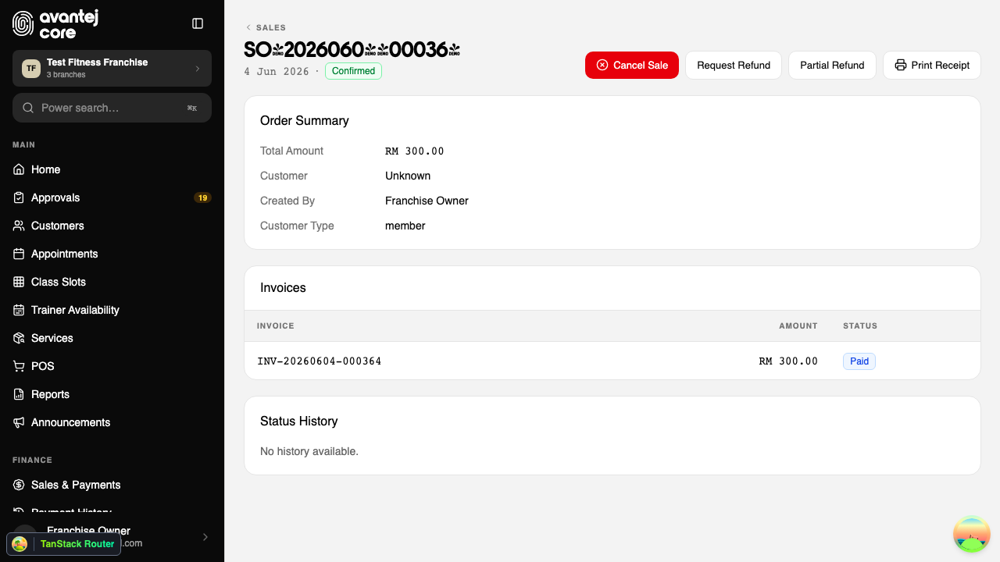
- Resolve fixtures (client, product, branch)
- Create a 10% promotion (valid now, member-scoped)
- Validate the promo against the order amount
- Record a POS sale that applies the promotion code
- The discounted order total persists on the sales order (pre-tax, post-discount)
- Open the Promotions page (Service catalog → Promotions tab)
- Cleanup — deactivate the seeded promotion
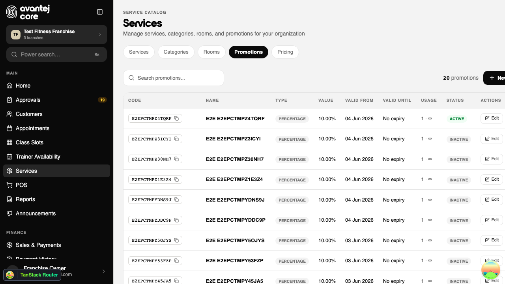
- Seed a product POS sale to cancel
- The order starts in a non-cancelled state
- Cancel the sales order (full refund of pre-tax total)
- The order is now reported as cancelled
- The order appears in the Cancelled Sales ledger
- Open the Cancelled Sales page — the heading and a row render
- It no longer appears as an active (non-cancelled) sale
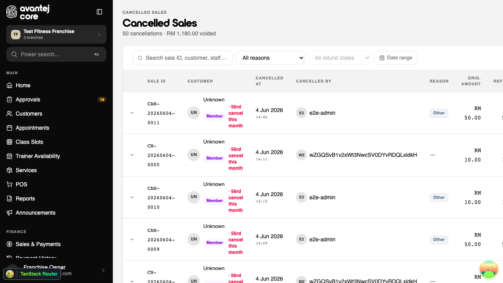
- Seed a product POS sale so the ledger is non-empty
- KPI summary computes without error
- The seeded order is present in the sales list
- Open the Sales ledger — heading and order rows render
- Cleanup — cancel the seeded order
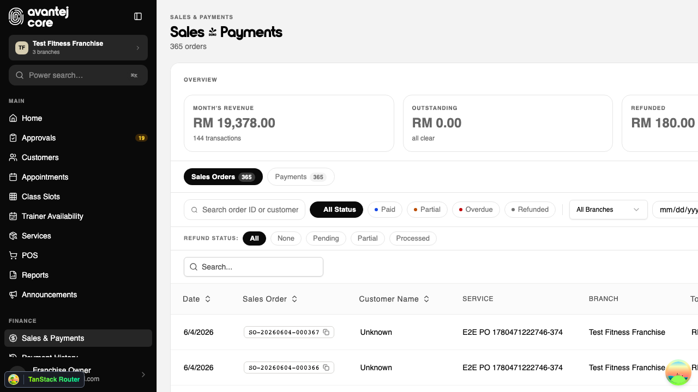
- Resolve fixtures (trainer, client, service, branch)
- Seed a confirmed private appointment for trainer + client
- Mark the appointment completed (triggers the commission engine)
- Open the Commissions surface
- Commission splits exist for the completed appointment
- Cleanup — cancel the seeded appointment

- Resolve a package-eligible service + assignable trainer
- Create a customer-purchased package (hits the approval gate)
- Pending package appears in the Approvals queue
- Assign a trainer — package transitions pending → active
- Verify the package is now active via getById
- Open the Packages view (legacy instances tab redirects here)
- Cleanup — cancel the seeded package
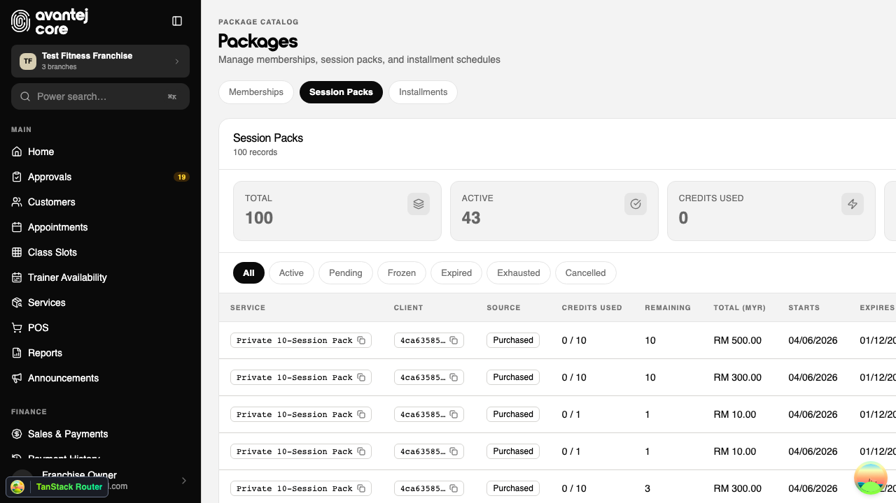
- Seed a customer-purchased (pending) package
- Reject the pending package as admin
- Verify the package status is cancelled via getById
- Open the Approvals queue (rejected package no longer pending)
- Cleanup — none needed (reject already cancelled the package)
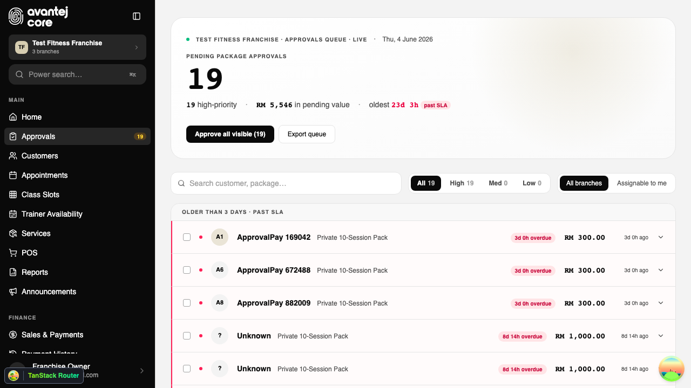
- Seed an active installment-plan package
- Read the generated installment schedule
- Confirm the first installment payment (cash)
- Open the Installments view (legacy tab redirects to packages)
- Cleanup — cancel the installment package
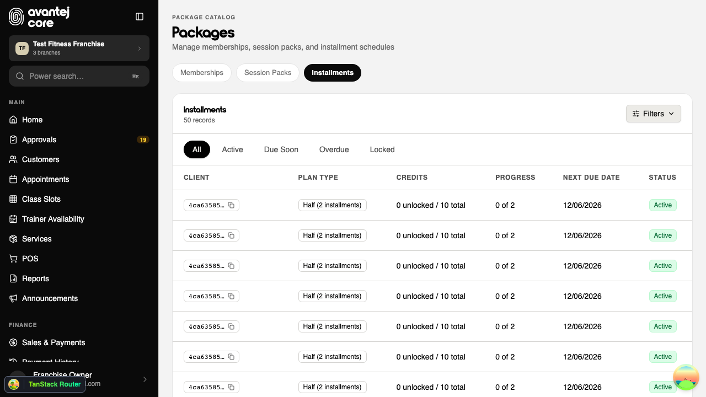
- Seed an active package to attach staff to
- Assign a trainer to staff slot 0
- Replace ALL staff assignments atomically (slot 0 only)
- Remove the staff member
- Open the Session Packs view to show the package list renders
- Cleanup — cancel the seeded package
- List active memberships via packageInstances.listMemberships
- Open the Memberships view (legacy tab redirects to packages)
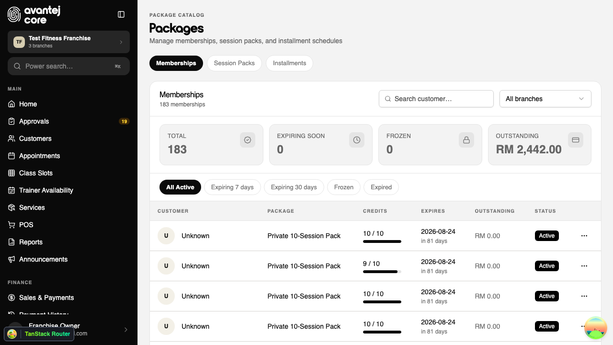
- Resolve fixtures (trainer, client, service, branch)
- Seed a confirmed private appointment for trainer + client
- Mark the appointment completed (runs the commission engine)
- Find a pending split for the appointment (or seed a manual bonus)
- Approve the pending split (commissionSplits.approve)
- Run a payout batch for the trainer (inserts a payout row + marks splits paid)
- Assert the payout row appears via payouts.list
- Open the Payouts ledger — the page renders without error
- Open the Commissions ledger — paid split is visible end-to-end
- Cleanup — cancel the seeded appointment
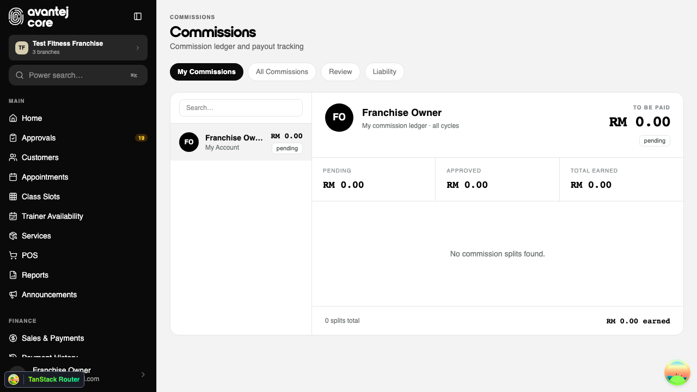
- Resolve a trainer to credit the bonus to
- Create a manual commission adjustment (bonus)
- Void the bonus with a reason (commissionSplits.void)
- Open the Commissions ledger — page renders without error
- Resolve a branch scope for the expenses
- Create an expense to push through approve → paid
- Create a second expense to push through the reject path
- Approve the first expense (expenses.approve)
- Mark the approved expense paid (expenses.markPaid)
- Reject the second expense with a reason (expenses.reject)
- Verify final statuses via expenses.getById
- Open the Expenses page — both expenses are reflected without error
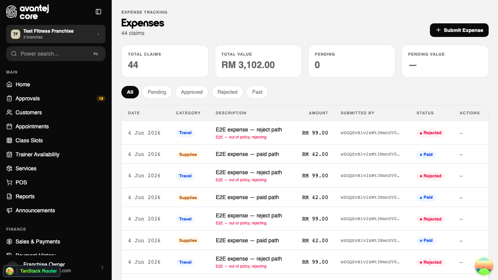
- Create a trainer tier (trainerTiers.create)
- Update the trainer tier (trainerTiers.update)
- Open the Trainer Tiers page (trainers/tiers → trainers/view?tab=tiers)
- Deactivate (delete) the trainer tier (trainerTiers.deactivate)
- Cleanup — ensure the tier is deactivated (idempotent)
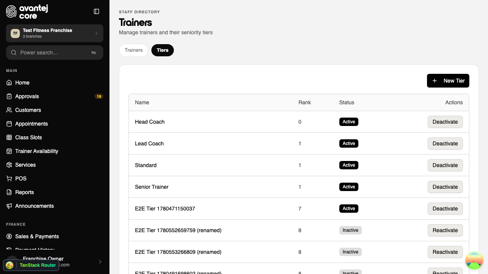
- Fetch the admin's own commissions via commissionSplits.getMyCommissions
- Open commissions/my (redirects to the Commissions hub, 'mine' tab)

- Resolve tenant fixtures (client, product, branch)
- Record a paid cash POS product sale (the order being refunded)
- Request a refund against the sale (creates a pending row)
- Approve the pending refund (full amount)
- Process the approved refund (records the manual reversal)
- Confirm via refunds.getById — refund is recorded as processed
- Refund appears under the Processed filter (refunds.list)
- Open the Refunds ledger — heading + status tabs render
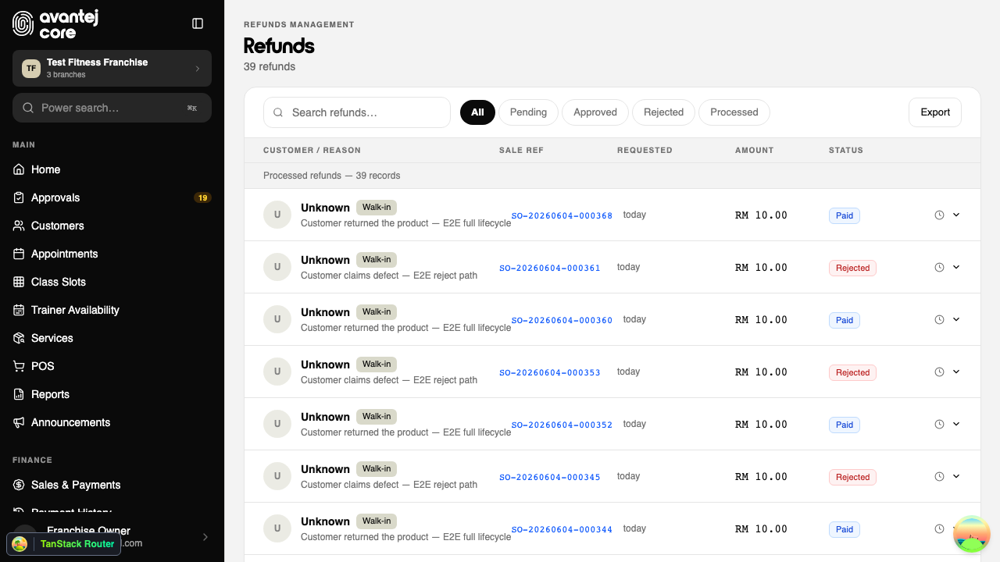
- Resolve tenant fixtures and record a paid POS sale
- Request a refund against the sale (pending)
- Reject the refund with required review notes
- Confirm rejection persisted via refunds.getById
- Open the Refunds ledger filtered to Rejected — page renders cleanly
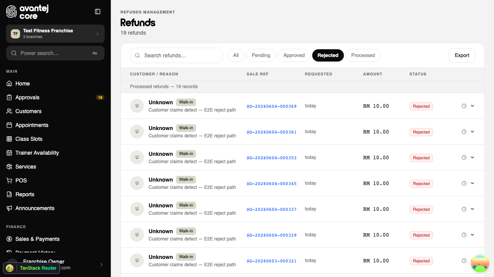
- Resolve fixtures (package service, client, installment plan, branch)
- Sell the package on an installment plan via POS
- Process an installment refund against the package instance
- Verify the installment refund event via installments.getEvents
- Open the Refunds ledger — page renders cleanly
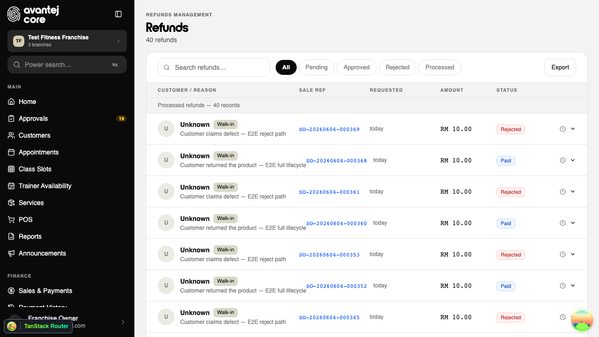
- Resolve fixtures (client, package-service, trainer/admin member, branch)
- Seed an assigned package with 1 credit for the client
- Seed a confirmed appointment for the same client
- Capture credits_used BEFORE the check-in
- Record the booking check-in consuming 1 credit
- Verify credits_used incremented by exactly 1 (getById)
- Cross-check via getActivePackageForMember (credit now spent)
- Open the Attendance page — the result is visible to staff
- Cleanup — delete the check-in (reverts credit) and cancel the appointment

- Seed an assigned 1-credit package + confirmed appointment
- Confirm the credit was consumed before deletion
- Delete the check-in (mistake correction)
- Verify the credit was reverted (creditsUsed back to original)
- Open the Attendance page — log reflects the corrected state
- Cleanup — cancel the seeded appointment
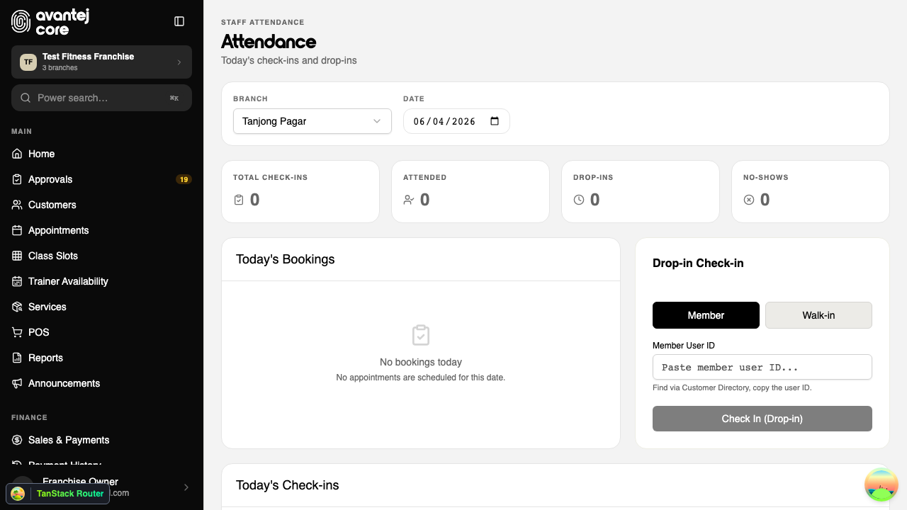
- Resolve branch, a service, an instructor, and clients to enroll
- Create a class slot dated TODAY (noon, so it lands inside the today window)
- Enroll the clients — creates today's pending bookings (appointment_clients rows)
- List today's bookings — the enrolled clients appear as pending
- Bulk check-in all pending bookings in a single call
- Open the Attendance page — bookings now show as checked-in
- Cleanup — delete the bulk check-ins, then cancel the class slot

- Resolve the branch scope
- Record an anonymous walk-in drop-in (no package, no credit)
- Verify the drop-in appears in checkIns.list for today
- Open the Attendance page — the drop-in is visible in the log
- Cleanup — delete the drop-in check-in

- Resolve a UOM and a real branch node
- Create a fresh active product
- Read the baseline stock level at the branch
- Adjust stock up by 25 units
- getStock reflects the new level
- Open the Products catalog page
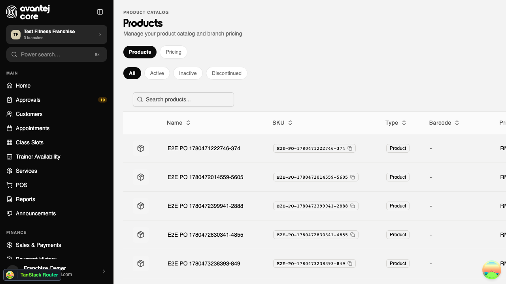
- Resolve supplier, branch, and a product
- Create a draft purchase order for 12 units
- Resolve the PO line-item id via getById
- Approve the purchase order
- Read the baseline stock at the receiving branch
- Receive all 12 units via a goods receipt (posts to stock)
- Stock increased by the received quantity
- PO rolled to received after full receipt
- Open the Purchase Orders page
- Cleanup — cancel the posted goods receipt (reverses stock)
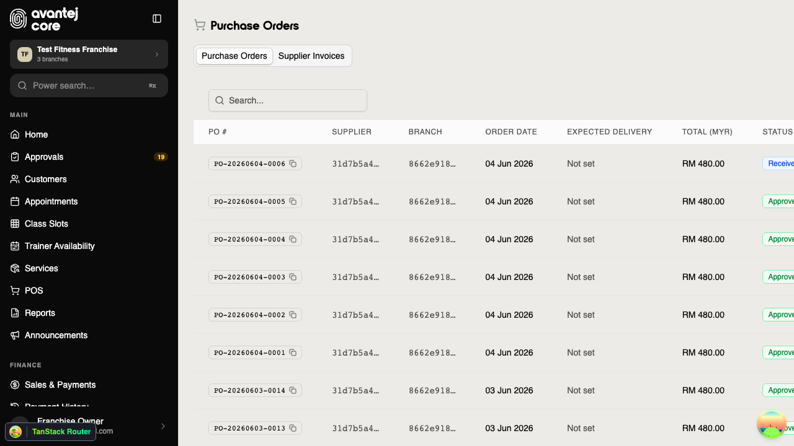
- Resolve two branches, a member, and a product
- Seed source-branch stock so the transfer has units to move
- Create a pending transfer order for 5 units
- Mark the transfer in transit
- Complete the transfer (receives 5 units at destination)
- Transfer order reads back as completed
- Open the Transfer Orders page
- Cleanup — cancel the transfer if it never completed
- Resolve branch(es), a member, and a product
- Create a pending stock request for 4 units
- Approve the stock request
- Fulfill the stock request for 4 units
- Destination branch stock reflects the fulfilled units
- Open the Stock Requests page
- Cleanup — reject the request if it never reached fulfilled
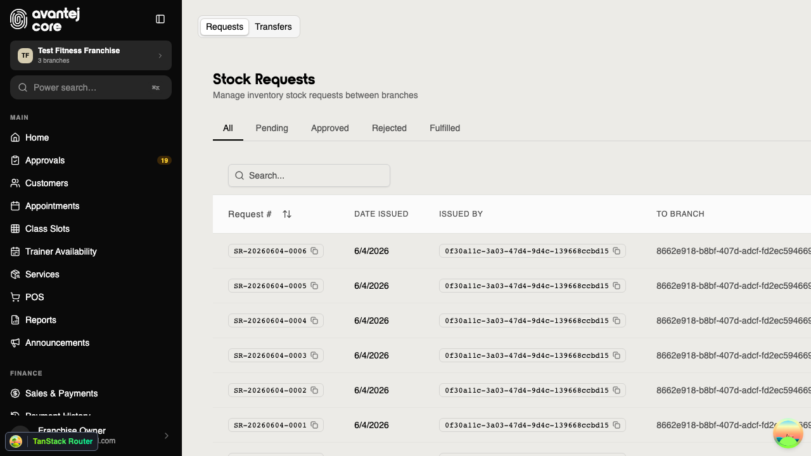
- Ensure baseline catalog fixtures resolve
- Create a brand and confirm it appears in the list
- Create a product category and confirm it lists
- Create a supplier and confirm it lists
- Create a unit of measure and confirm it lists
- Open the Inventory Options dashboard
- Cleanup — remove the created brand, category and UOM (deactivate supplier)
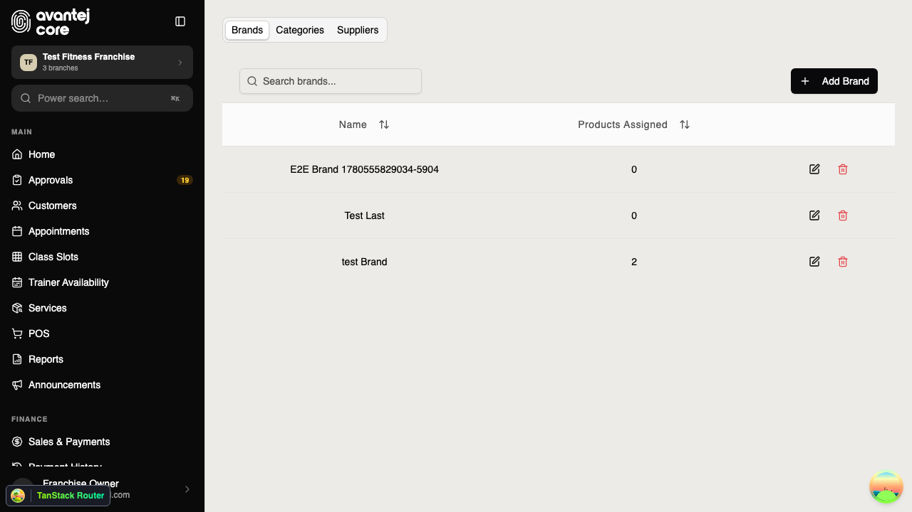
- List registered customers via customerDirectory.list
- Open the Customers directory page — heading + list render
- Fetch the Customer 360 detail via customerDirectory.getById
- Open the Customer 360 page
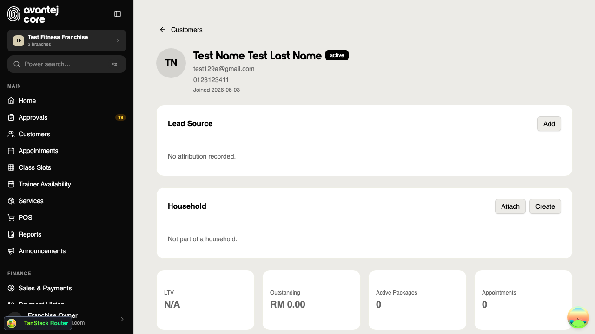
- Resolve an active client to edit
- Upsert the client's profile via the admin-scoped procedure
- Open the Customer 360 page so the edited profile is visible
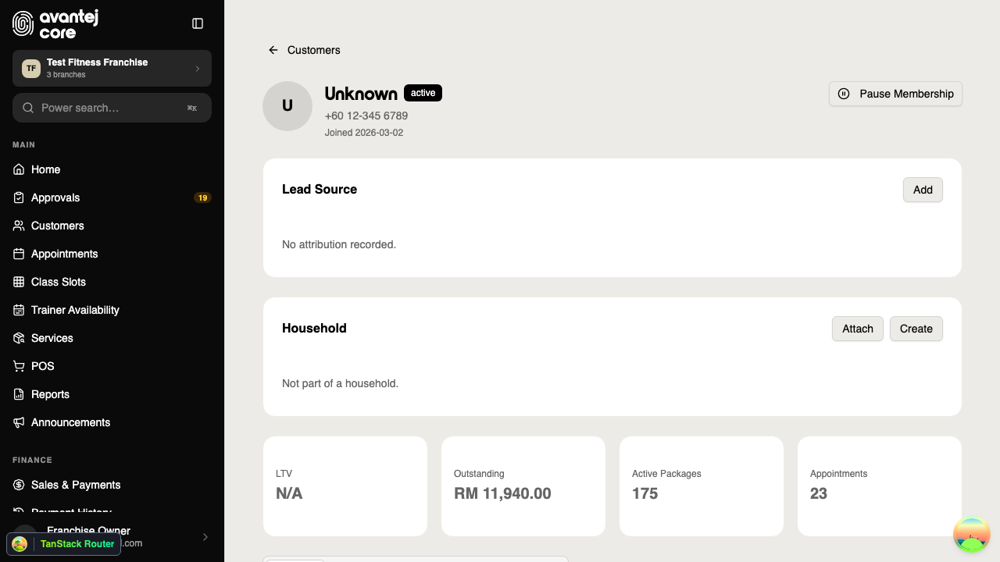
- Fetch the walk-in customers list via walkInCustomers.list
- Open the walk-in page — it redirects to the Customers directory
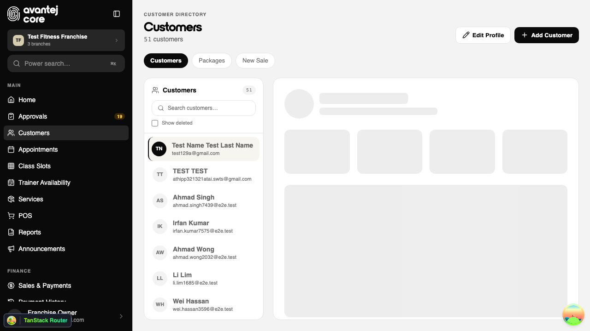
- Resolve a trainer member + a service
- Assign the member to the service via serviceMembers.assign
- listForService includes the assigned member
- Open the My Services page (renders the logged-in admin's assignments)
- Remove the member from the service and confirm it's gone
- Cleanup — ensure the assignment is removed
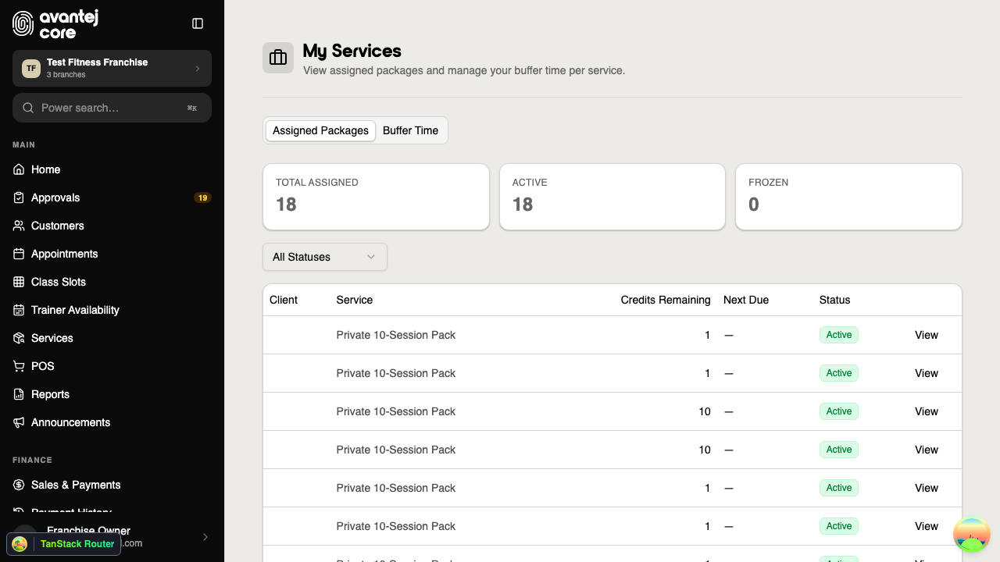
- Confirm at least one trainer exists via members.list (trainer role)
- Open the Trainers directory page — heading renders
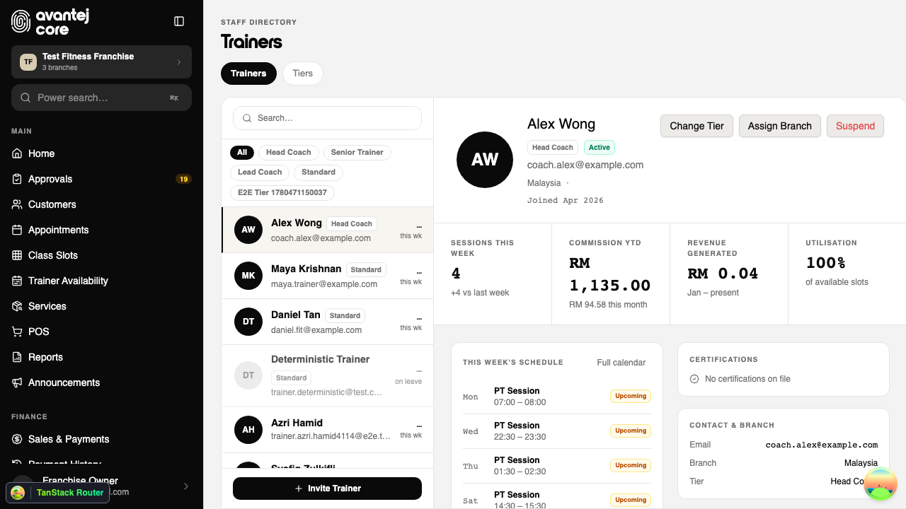
- Upsert the organization name setting via oRPC
- Upsert the organization timezone setting via oRPC
- Read both settings back via get — values reflect the upsert
- Open the Organization Settings page
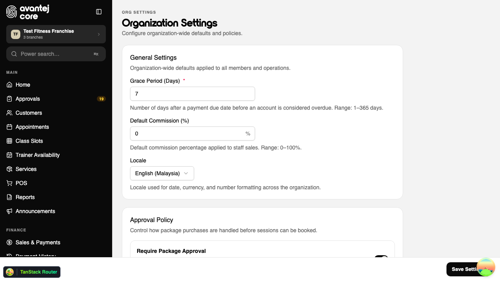
- Create a new tax rate via oRPC
- Mark the tax rate as default
- getDefault returns the newly defaulted tax rate
- Open the Tax Rates settings page
- Cleanup — deactivate the seeded tax rate
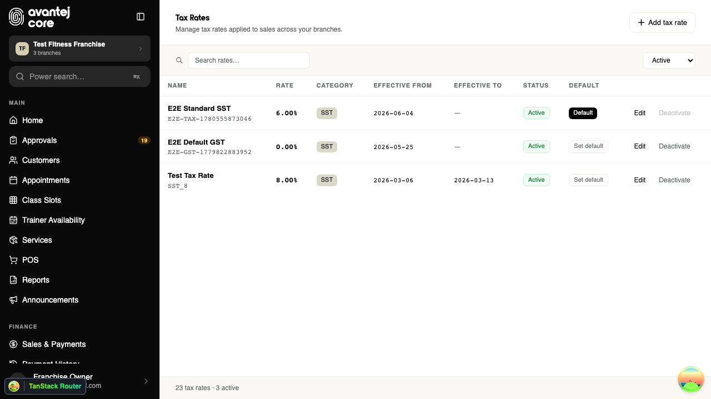
- Create a 3-instalment plan via oRPC
- Mark the installment plan as default (no getDefault → assert returned row)
- getById confirms the plan persisted as default
- Open the Installment Plans settings page
- Cleanup — deactivate the seeded installment plan
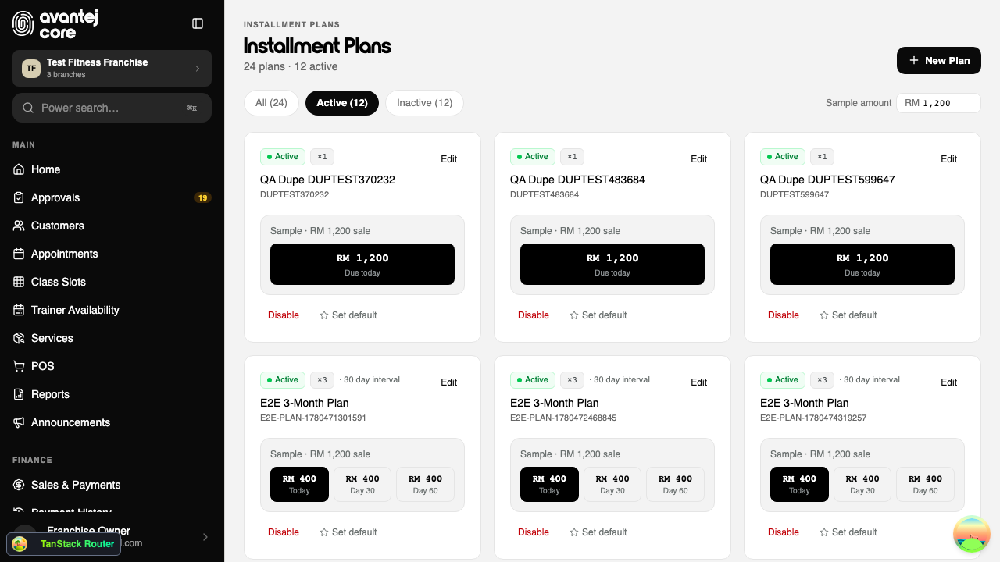
- Create an active, branch-scoped announcement via oRPC
- listActive surfaces the new announcement
- Open the Announcements page — the new announcement renders
- Cleanup — delete the seeded announcement
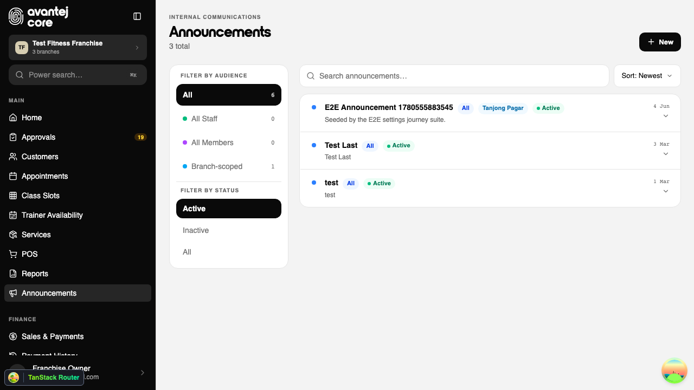
- List the current notifications via oRPC
- Mark all notifications read
- getUnreadCount is now zero
- Open the Notifications page
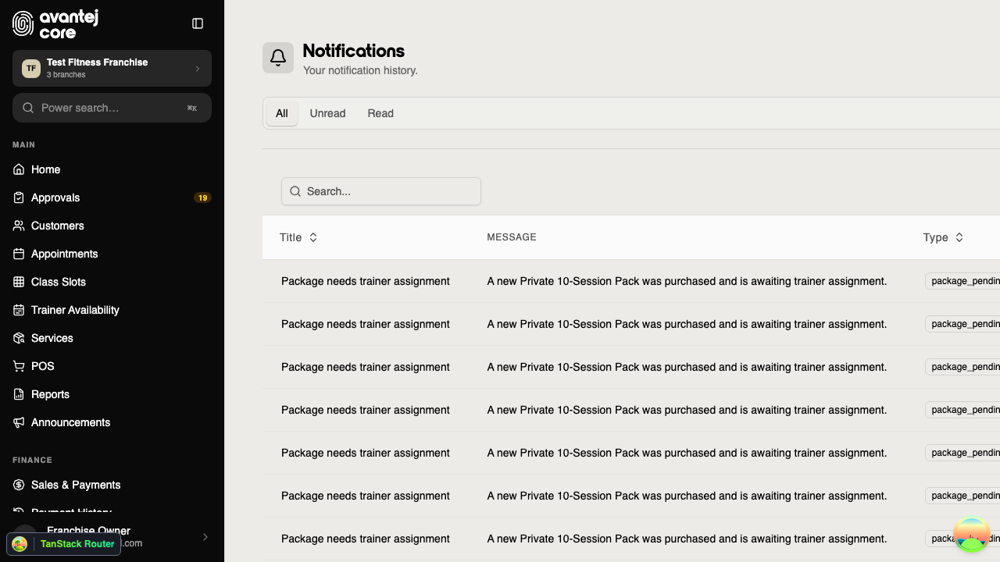
- Fetch the caller's Google Calendar connection status via oRPC
- Open the Google Calendar settings page
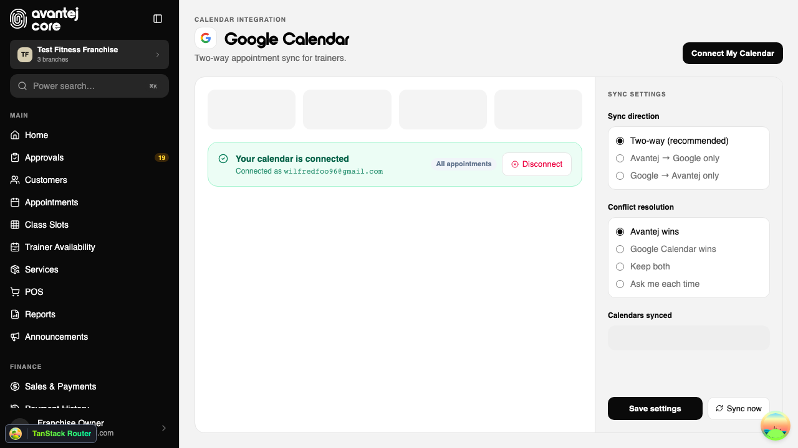
- Resolve the organization root to parent the new country
- Create the country node (depth 1)
- Create the state node under the country (depth 2)
- Create the branch node under the state (depth 3)
- listNodes shows the full chain
- Open the Create Branch page (UI heading renders)
- Open the new branch detail page
- Cleanup — delete the created chain (cascade)
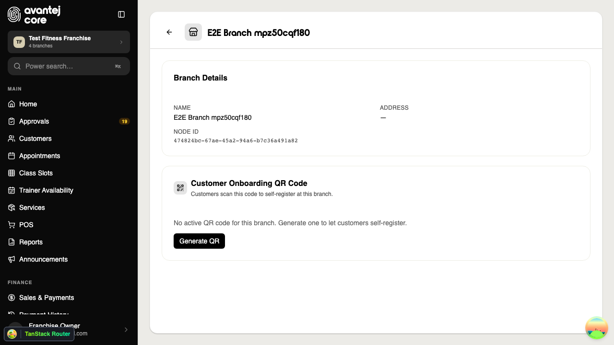
- Resolve a target branch scope (accessible to admin)
- Pick a member to move (trusted picker → tenant members.id)
- Reassign the member to the target branch scope
- Assert the new scope via getNode + listMembers
- Open the branch detail page to visualise the scope
- Cleanup — restore the member to its original scope

- Resolve a target branch scope
- Pick up to 2 members to bulk-move (trusted pickers)
- Bulk-reassign the members to the target scope
- Assert via listMembers — all moved members are in the new scope
- Open the branch detail page
- Cleanup — restore each member to its original scope
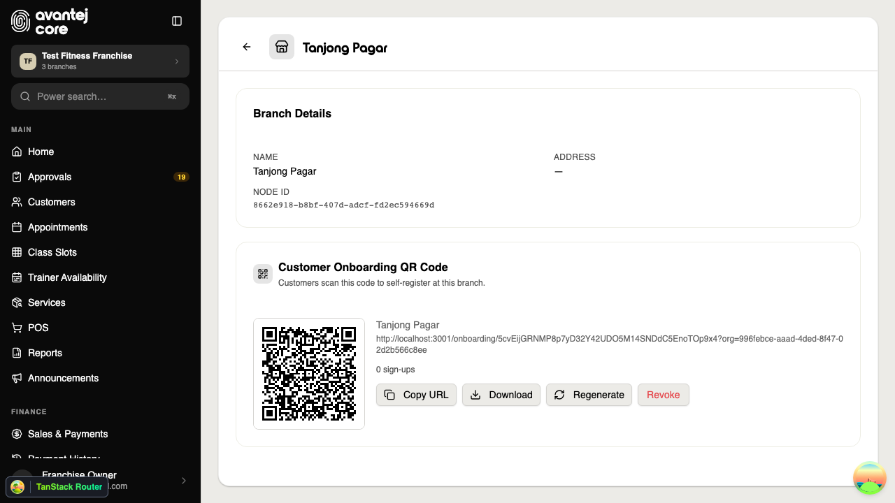
- Resolve the organization root
- Build a country → state → branch chain
- getDescendants(country) returns state + branch (not the country itself)
- getDescendants(state) returns just the branch
- Open the branch detail page for the leaf node
- Cleanup — delete the chain (cascade)
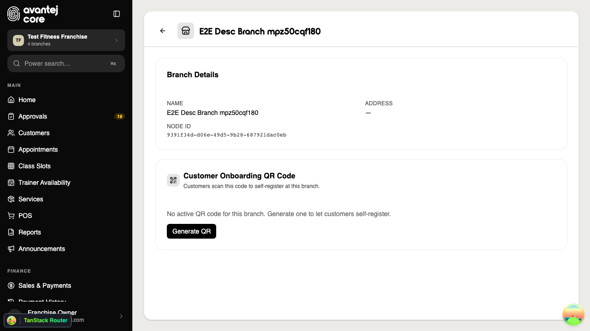
- Resolve fixtures (trainer, client, service, branch)
- Create a confirmed weekly recurring series (8 occurrences)
- List the series — virtual occurrences expand from the parent
- Open the Appointments schedule — the series renders without error
- Cancel all future occurrences from a mid-series date
- Cleanup — cancel the whole series
- Resolve fixtures (service, branch, trainer as instructor)
- Create a class slot for the service (capacity 10)
- Read the slot's signups — fresh slot has zero enrollments
- Open the Class Slots schedule — the new slot renders without error
- Cleanup — cancel the seeded class slot
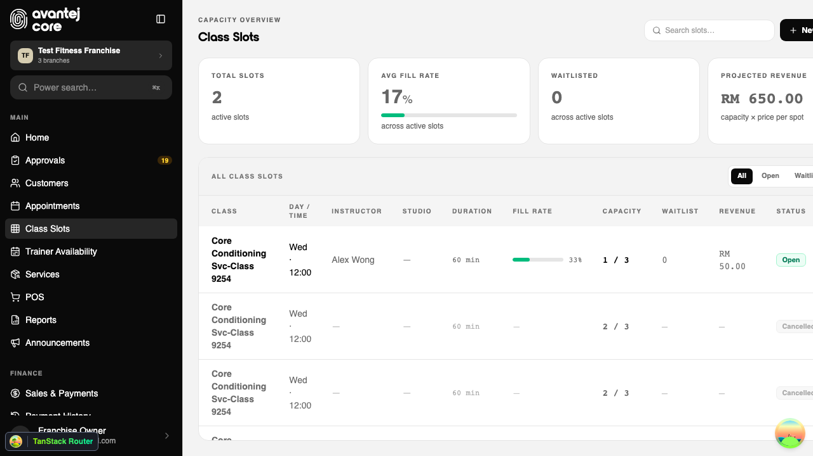
- Resolve fixtures (branch)
- Create a training room (capacity 4)
- List rooms — the new room is present
- Update the room (rename + bump capacity)
- Open the Rooms surface (redirects to Services → Rooms tab) without error
- Delete the room and confirm it is gone from the list
- Cleanup — delete the room if it still exists
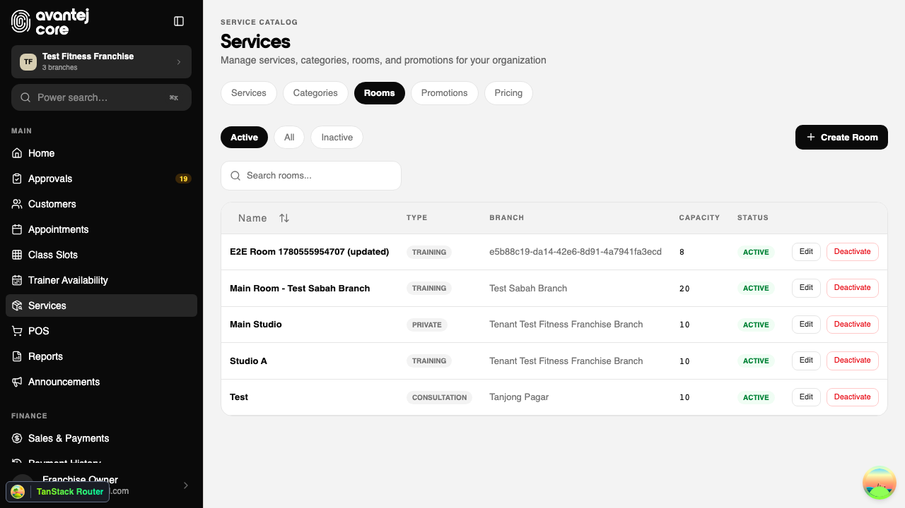
- Resolve fixtures (trainer)
- Upsert a Mon/Wed availability template for the trainer
- List the trainer's availability — both slots are present
- Open the Trainer Availability page — template renders without error
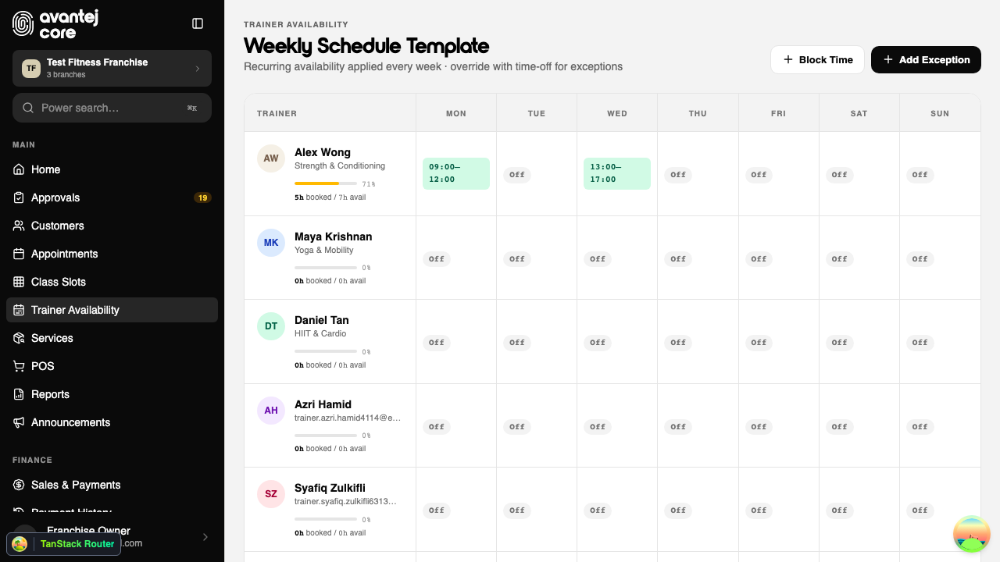
- Resolve fixtures (trainer, client, service, branch)
- Book the trainer's first appointment (confirmed)
- Attempt a second, overlapping booking for the SAME trainer → rejected
- Open the Appointments schedule — the single booking renders without error
- Cleanup — cancel any appointments created in this journey
- Load the staff's userContext
- Role is 'staff' and the platform-admin flag is off
- Permissions are read-only — no create/update/delete/approve

- brands.create → FORBIDDEN
- productCategories.create → FORBIDDEN
- members.deactivate → FORBIDDEN
- services.list (service_management:read) succeeds
- appointments.list (appointment_management:read) succeeds
- members.list (user_management:read) succeeds

- Staff lands on the dashboard (authenticated)
- Navigating to an admin-only area degrades gracefully (no crash)
- Navigating to inventory (no permission) degrades gracefully
- userContext exposes a non-empty, bounded hierarchy for the staff

Generated from e2e/journeys/.results/report.json